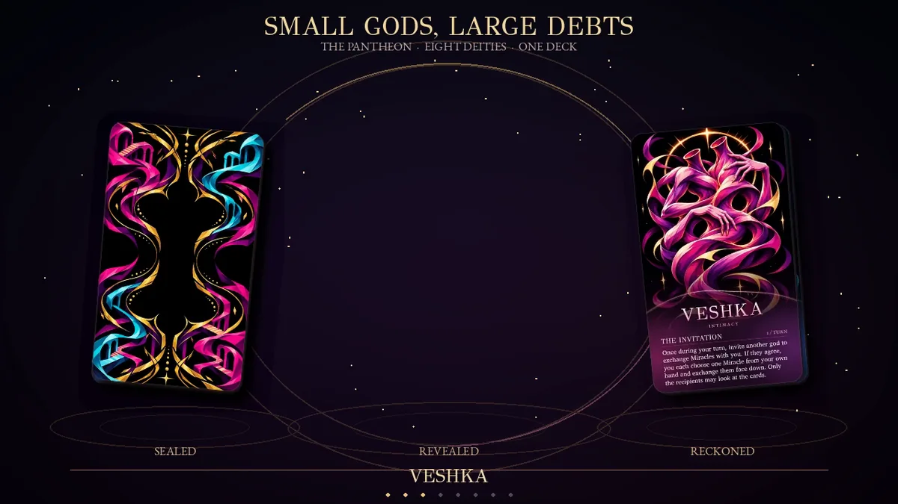
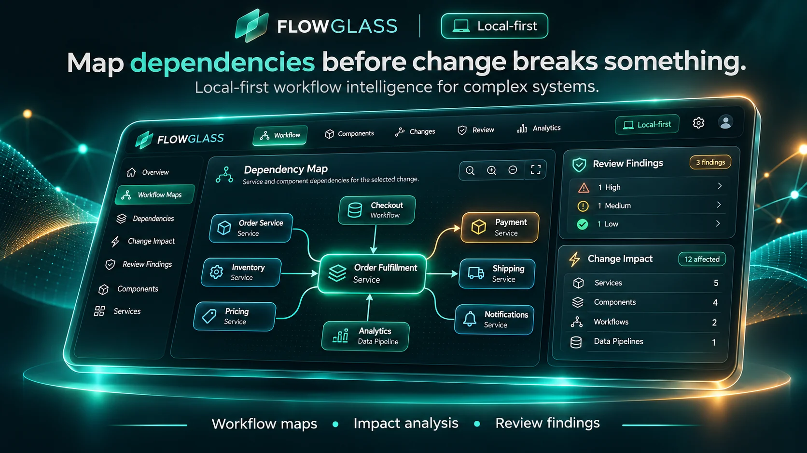
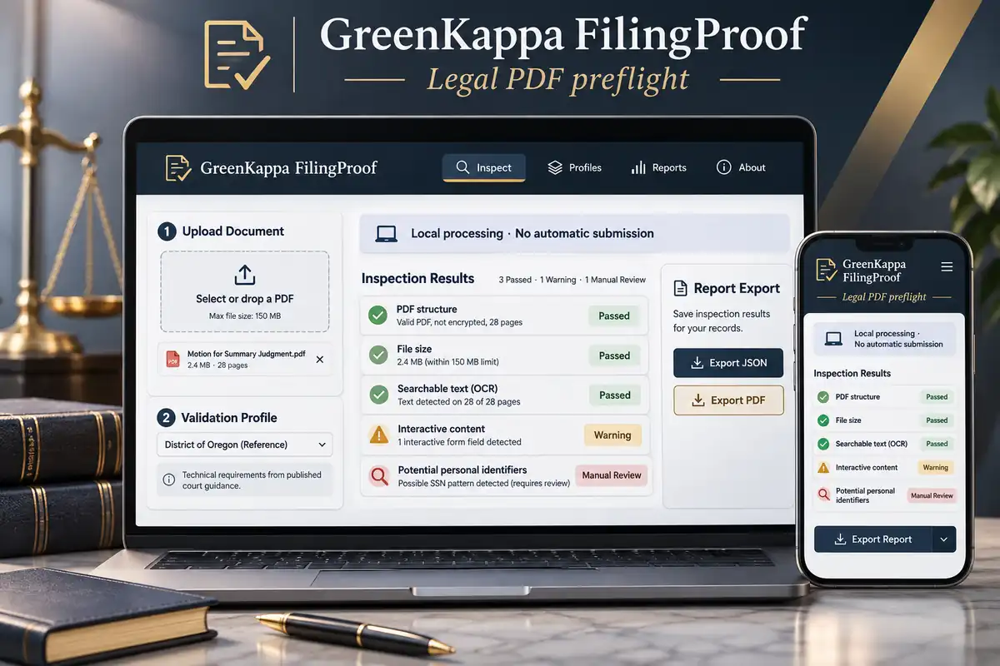
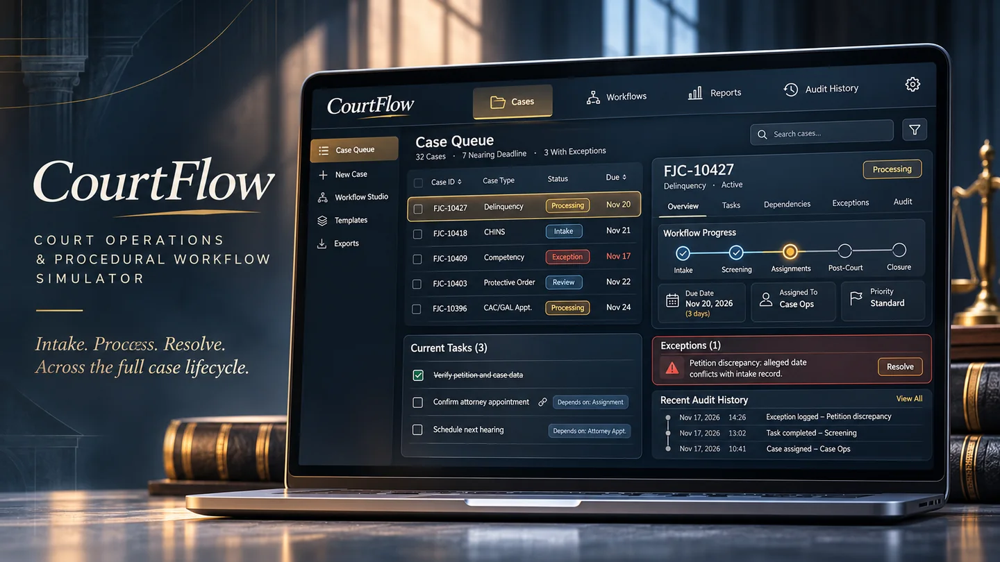

01 / GREENKAPPA INTERACTIVE
GreenKappa Labs / Featured projects
Explore desktop RPG software, original card games, tabletop sourcebooks, adventures, and tools for creators.
01 / GREENKAPPA INTERACTIVE
Viewing 1 of 10 · TableArc
Swipe left or right to browse featured projects
Ten featured studio projects · Live digital games, working tools, illustrated worlds, and tabletop prototypes · Promotional artwork is illustrative
RPG software and playable systems built around agency, memory, persistent state and meaningful consequences.

TABLEARC / LOCAL-FIRST RPG ENGINE
Natural-language tabletop play with structured campaign state, rules procedures, maps and persistent saves.

TABLEARC RED / STANDALONE RPG SOFTWARE
Built for Cyberpunk RED gigs, Netrunning, tactical combat and continuing campaign consequences.
Original card and board games: a live multiplayer party-game product, a social strategy design, and a spatial board game.
Play AGENT/FAULT with friends online, try BI PANIC! on one shared device, or explore two tabletop games in development.
One agent. Everyone else is a problem.
A live digital party-game playtest with 66 illustrated cards, private phone controllers, rotating Judges, and a shared multiplayer server. Classic pits anonymous responses against one another; Cascade lets players inherit and reshape a continuing AI conversation.

Bargain with rival gods, spend Devotion, pursue Glory, and contend with impossible cosmic Titans. Every miracle has consequences.
Explore the game ↗Build an impossible house from Room cards, redirect its passages, find three Proofs, and escape before the final Shift. No fixed board; every connection matters.
Explore this board game ↗
Roll the Panic Die, reveal a confession, dare a friend, or take the BI PANIC twist. The 60-card prototype plays locally on one shared screen.
Explore and play BI PANIC! ↗Two separate collections: illustrated universe sourcebooks, led by The Oldest House / Control, followed by individual adventures, led by The Records House.
Five illustrated tabletop adaptations and setting libraries. The Oldest House leads the collection; each universe has its own rules, reference material, and development status.
 01 / FEATURED SOURCEBOOK · CONTROL
The Oldest House
An extensively developed unofficial fan adaptation · Paranatural investigations, field operations, and anomalous casework
01 / FEATURED SOURCEBOOK · CONTROL
The Oldest House
An extensively developed unofficial fan adaptation · Paranatural investigations, field operations, and anomalous casework
 02 / SOURCEBOOK COLLECTION
The Supergiant Collection
Six volumes, including The Echoes Table
03 / SOURCEBOOK COLLECTION
The Cosmic Wheel Codex
Tarot magic, witchcraft, and authored fate
02 / SOURCEBOOK COLLECTION
The Supergiant Collection
Six volumes, including The Echoes Table
03 / SOURCEBOOK COLLECTION
The Cosmic Wheel Codex
Tarot magic, witchcraft, and authored fate
 04 / SOURCEBOOK COLLECTION
The Election of Futures
A Metaphor-inspired fifth-edition compendium
05 / SOURCEBOOK COLLECTION
Warframe: Origin System
Tenno, missions and a fifth-edition field guide
04 / SOURCEBOOK COLLECTION
The Election of Futures
A Metaphor-inspired fifth-edition compendium
05 / SOURCEBOOK COLLECTION
Warframe: Origin System
Tenno, missions and a fifth-edition field guide
Four individually catalogued adventures, separate from the universe sourcebook shelf. The Records House leads, followed by Dead Air and two additional campaign modules.
 01 / Featured original adventure
The Records
01 / Featured original adventure
The Records 03 / Metaphor-inspired linked campaign
Ballots Under Glass
Three linked Metaphor-inspired political adventures for levels 3–9
Explore adventure
03 / Metaphor-inspired linked campaign
Ballots Under Glass
Three linked Metaphor-inspired political adventures for levels 3–9
Explore adventure
 04 / Warframe mission · GM manual cover
The Silent Auction
A starter Warframe operation with encounter material and GM/player maps
Explore adventure
04 / Warframe mission · GM manual cover
The Silent Auction
A starter Warframe operation with encounter material and GM/player maps
Explore adventure
Explore five Universe Sourcebooks and four Separate Adventures. The Oldest House leads the sourcebook library, while The Records House is the featured adventure. All projects retain their development and rights disclosures.
Visit the Worlds libraryPractical software for navigating dependencies, documents, decisions and complex workflows.
Four working alphas / Two software concepts
Explore four functioning browser-based demonstrations, then see two focused software ideas still in design. Every product distinguishes what works from what is only planned.
Product imagery above; functional scope and live launch links below.

Build dependency graphs, trace downstream change impacts, identify cycles and export transparent review reports.
Graph editing · Impact paths · JSON exportsWORKING ALPHA · v0.1Launch Flowglass ↗
Review PDF text layers, form fields, attachments and selected filing guidance before submitting a document.
Local PDF checks · Source links · Review reportsWORKING ALPHA · v0.1Launch FilingProof ↗
Design fictional case workflows, connect tasks and priority rules, then test cases, queues, exceptions and handoffs.
Workflow canvas · Synthetic cases · Audit exportsWORKING ALPHA · v0.2Launch CourtFlow ↗Create and validate branching procedures, run guided routes and export versioned handoff records.
Requirements and data models only; no public application yet.
Link claims to precise sources, inspect revision histories and flag unsupported changes for human review.
Source traceability · Decision recordsCONCEPT · REQUIREMENTS STAGEExplore concept ↗Distinguish canon from drafts and in-world claims while tracking characters, timelines and rules.
Canon provenance · Relationship graphsCONCEPT · DATA MODEL STAGEExplore concept ↗How the work is approached
A game should tell you what your decision changed. Software should do the same. The aim is to make both interesting to use and possible to examine.
Find out what someone is trying to do before designing another screen or adding another mechanic.
Define which part of a system can change the facts, and keep those changes visible.
Use real workflows, diagnostics, and accessibility checks—not just a convincing demo.
Capabilities
A useful product needs working code, an interface people understand, documentation they can use, and tests that catch failures.
Provider integrations, grounded generation, local models, structured outputs, and human-readable failure handling.
Responsive interfaces, desktop packaging, stateful workflows, maps, dashboards, and user-facing diagnostics.
Power Platform, SharePoint, Power Automate, operational tracking, forms, notifications, and process redesign.
Architecture plans, testing protocols, decision records, sourcebooks, presentations, and accessible reference material.
About the builder
An independent developer and designer working across applied AI, interactive software, and original tabletop games.
Current work spans GreenKappa Interactive (TableArc and TableArc RED), four original card and board games, illustrated GreenKappa Worlds sourcebooks and adventures, and early-stage utility concepts under GreenKappa Tools. The work ranges from structured RPG state to physical spatial puzzles and AI-assisted party games.
Contact
Interested in testing a game, collaborating on interactive software, or helping shape a GreenKappa Tools concept? Get in touch.